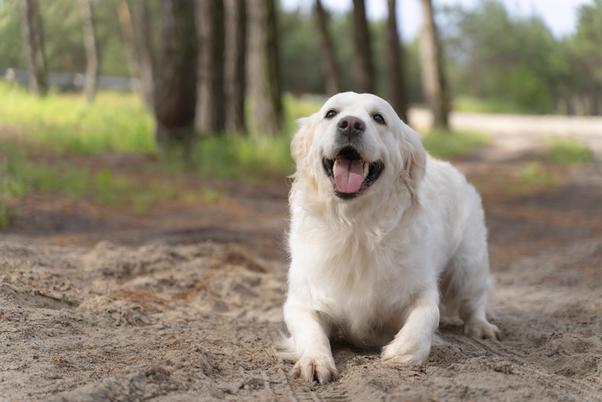

Histórias de Sucesso: Resgate e Recuperação de Animais
A Jornada de Esperança de Luna
Luna, uma adorável gata de rua, foi encontrada em condições desoladoras, lutando para sobreviver. Com a dedicação de um grupo de voluntários dedicados, Luna foi resgatada, recebendo os cuidados médicos e atenção que merecia. Mesmo após superar uma série de desafios de saúde, Luna não apenas se recuperou completamente, mas também encontrou um lar amoroso onde agora vive como uma gatinha alegre e cheia de energia.
Renascimento de Max
Max, um cãozinho corajoso, enfrentou sérios problemas de saúde quando foi resgatado de um ambiente abusivo. Com uma equipe de veterinários dedicados e o amor paciente de seus novos donos, Max passou por cirurgias de vida e se reabilitou gradualmente. Sua história de resiliência e superação é um lembrete poderoso de como o cuidado adequado e o apoio podem transformar vidas, levando Max a uma recuperação completa e uma vida feliz.
A História de Charlie
Charlie, um cão idoso e debilitado, foi deixado em um abrigo por seu dono anterior. No entanto, sua sorte mudou quando uma família amorosa decidiu adotá-lo. Apesar de sua idade avançada, Charlie demonstrou uma incrível capacidade de se adaptar e aprender a confiar novamente. Com paciência e carinho, Charlie não só encontrou um novo lar, mas também se tornou um membro amado da família, proporcionando alegria e companhia a todos ao seu redor.

Coloque a experiência do seu pet ❤